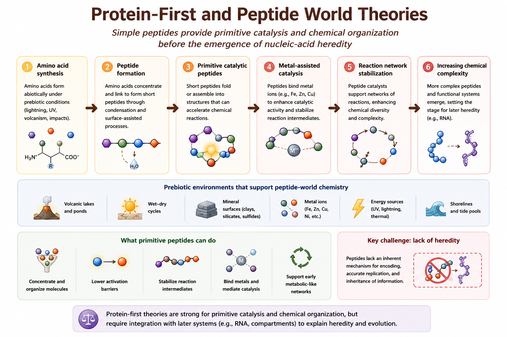

Chapter 8 Protein-First and Peptide World Theories
8.1 Core Idea
Protein-first and peptide world theories propose that simple peptides may have acted as primitive catalysts before nucleic-acid heredity emerged. In these models, catalytic chemistry preceded true genetic systems, allowing increasingly complex reaction networks to develop under prebiotic conditions.
Rather than beginning with informational molecules such as RNA, these theories suggest that early life may initially have depended on functional chemistry and primitive catalysis.
8.2 Historical Context
Protein-first theories emerged partly in response to limitations associated with purely RNA-centered origin-of-life models. Researchers questioned whether RNA molecules alone could realistically account for the earliest stages of chemical evolution without prior catalytic support.
Early work by Sidney Fox, Günter Wächtershäuser, and others proposed that amino acids and short peptides may have formed naturally on the early Earth and contributed to primitive metabolic organization before the emergence of hereditary systems.
These ideas became increasingly important after experimental studies demonstrated that amino acids form relatively easily under simulated prebiotic conditions.
8.3 Mechanistic Basis
Protein-first theories emphasize the catalytic potential of short peptides and amino-acid assemblies. The proposed pathway generally involves:
- Abiotic synthesis of amino acids
- Peptide bond formation and short-chain assembly
- Emergence of primitive catalytic activity
- Stabilization of chemical reaction networks
- Increasing molecular complexity prior to nucleic-acid heredity
Figure 8.1 summarizes the conceptual mechanism proposed by peptide-world theories.

Figure 8.1: Conceptual mechanism of Protein-First and Peptide World theories. Primitive peptides may have supported early catalysis and chemical organization before nucleic-acid heredity emerged.
The figure illustrates how simple peptides may have contributed to early catalysis, energy transfer, and stabilization of reaction pathways before the development of true hereditary systems.
Many versions of the theory also emphasize the importance of metal ions and mineral surfaces in promoting peptide formation and catalytic activity.
8.4 What the Theory Explains Well
Protein-first theories are strongest at explaining:
- Primitive catalysis
- Reaction acceleration
- Metal-assisted chemistry
- Early metabolic organization
- Functional chemistry before heredity
These models provide a plausible explanation for how increasingly complex chemical systems may have emerged before the appearance of sophisticated genetic replication.
8.5 What Makes It Plausible
Several observations support the plausibility of peptide-world scenarios:
- Amino acids form readily under simulated prebiotic conditions
- Amino acids are detected in meteorites and interstellar chemistry
- Short peptides can form through dehydration reactions
- Small peptides can exhibit catalytic properties
- Metal-peptide complexes may stabilize primitive reactions
Experimental studies also show that peptides may assist with membrane stabilization and molecular organization.
8.6 Key Experimental / Observational Support
Evidence supporting protein-first models includes:
- Miller–Urey-type amino acid synthesis experiments
- Detection of amino acids in carbonaceous meteorites
- Laboratory peptide polymerization experiments
- Metal-binding peptide catalysis
- Surface-assisted peptide assembly on minerals
Some experimental systems further suggest that wet–dry cycles may naturally promote peptide bond formation.
8.7 Relationship to Other Origin-of-Life Theories
Protein-first theories overlap strongly with several other origin-of-life frameworks:
- Metabolism-first theories through catalytic reaction networks
- Hydrothermal vent theories through metal-assisted chemistry
- Wet–dry cycle theories through peptide polymerization
- RNA world models through possible later integration with hereditary systems
Most modern researchers therefore view peptide-world models as complementary components within broader hybrid origin-of-life scenarios.
8.8 Major Gaps and Critiques
The largest unresolved problem is heredity.
Unlike nucleic acids, peptides do not naturally provide a robust mechanism for encoded information storage or accurate template replication. As a result, protein-first systems struggle to explain how Darwinian evolution could begin without the later emergence of RNA or related informational molecules.
Additional challenges include:
- Limited replication fidelity
- Weak evolutionary memory
- Lack of stable inheritance mechanisms
- Difficulty transitioning toward modern genetics
8.9 Current Scientific Standing
Protein-first theories remain scientifically important as partial explanations for early catalytic organization and prebiotic chemistry. However, they are rarely treated as complete standalone explanations for abiogenesis.
Most current research instead treats peptides as likely cooperative partners within broader hybrid models involving RNA, metabolism, mineral catalysis, and protocell formation.
| Dimension | Assessment |
|---|---|
| Strength | Primitive catalysis and reaction acceleration |
| Plausibility | Moderate |
| Main Gap | Lack of robust heredity |
| Current Standing | Influential supporting model within hybrid theories |
8.10 Comparative Assessment
Compared with other origin-of-life theories, protein-first models perform strongest in explaining primitive catalysis and chemically driven reaction acceleration. They provide a plausible mechanism for how increasingly complex chemical systems may have developed before the appearance of sophisticated genetic machinery.
However, unlike RNA-world theories, protein-first models struggle to explain how reliable information storage and inheritance could emerge. In this sense, peptide-world theories are often viewed as complementary catalytic frameworks rather than complete standalone explanations for abiogenesis.
Relative to other major theories:
- Stronger than primordial soup models at explaining functional catalysis
- Weaker than RNA-world models at explaining heredity
- Closely connected to metabolism-first theories through catalytic networks
- Potentially compatible with lipid-world protocell models
- Strongly supported by wet–dry cycle peptide polymerization experiments
Most modern hybrid origin-of-life frameworks therefore treat peptides as important cooperative components within broader multi-stage evolutionary scenarios.
8.11 Performance Across Major Abiogenesis Challenges
Table 8.1 summarizes how protein-first theories perform across the major origin-of-life transitions introduced earlier in this book.
| Challenge | Performance |
|---|---|
| Abiotic synthesis | Strong |
| Catalysis | Strong |
| Metabolic organization | Moderate-Strong |
| Compartment formation | Weak |
| Information storage | Weak |
| Hereditary replication | Weak |
| Darwinian evolution | Limited |
The strongest contribution of protein-first theories lies in their ability to explain primitive catalytic chemistry and early reaction networks. Their weakest area remains the emergence of stable hereditary information and long-term evolutionary memory.